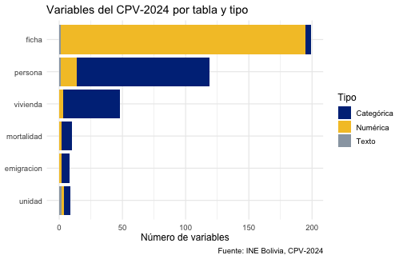
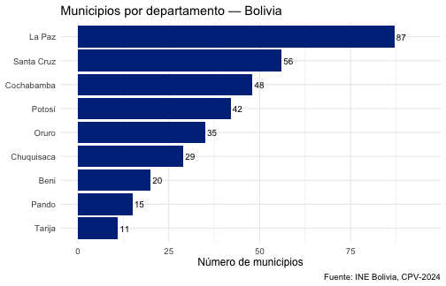
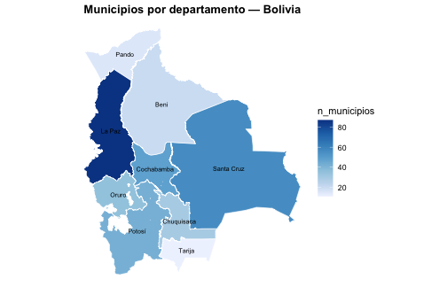

¿Qué es censosbo?
censosbo es un paquete de R que facilita el acceso a los
microdatos de los censos de Bolivia (1976, 1992, 2001,
2012 y CPV-2024), publicados por el Instituto Nacional de Estadística
(INE).
Los datos se distribuyen como archivos Parquet comprimidos, que se descargan bajo demanda y se guardan en un caché local. No es necesario descargar todo: se puede pedir solo el departamento de interés.
Instalación
install.packages("censosbo")Censos disponibles
| Año | Función | Registros | Columnas | Disco (Parquet) | RAM (aprox.)¹ |
|---|---|---|---|---|---|
| 1976 | get_poblacion_1976() |
4,613,419 | 48 | 46 MB | ~890 MB |
| 1976 | get_viviendas_1976() |
1,158,482⁴ | 29 | 5 MB | ~135 MB |
| 1992 | get_personas_1992() |
6,420,792 | 58 | 99 MB | ~1,5 GB |
| 1992 | get_viviendas_1992() |
1,701,168⁴ | 47 | 20 MB | ~330 MB |
| 1992 | get_mortalidad_1992() |
1,706,107 | 17 | 11 MB | ~125 MB |
| 2001 | get_personas_2001() |
8,274,325 | 70 | 135 MB | ~2,5 GB |
| 2001 | get_viviendas_2001() |
2,281,022⁴ | 42 | 21 MB | ~390 MB |
| 2012 | get_personas_2012() |
10,059,856 | 41 | 120 MB | ~1,7 GB |
| 2012 | get_viviendas_2012() |
3,159,350⁴ | 35 | 26 MB | ~455 MB |
| 2012 | get_emigracion_2012() |
489,559 | 9 | 4 MB | ~20 MB |
| 2012 | get_discapacidad_2012() |
342,929 | 11 | 3 MB | ~17 MB |
| 2024² | get_personas_2024() |
11,365,333 | 119 | 282 MB | ~5,6 GB |
| 2024² | get_viviendas_2024() |
4,480,201⁴ | 48 | 55 MB | ~1,0 GB |
| 2024² | get_emigracion_2024() |
500,914 | 8 | 2 MB | ~39 MB |
| 2024² | get_mortalidad_2024() |
382,731 | 10 | 2 MB | ~33 MB |
| 2024³ | get_unidades_2024() |
268,604 | 9 | 2 MB | ~16 MB |
| 2024³ | get_fichas_2024() |
150,744 | 199 | 15 MB | ~230 MB |
¹ Tamaño al cargar la tabla completa con
collect() sin filtros. Por eso Arrow es el formato por
defecto: get_personas_2024() para todo el país no cabe
cómodamente en RAM, pero sí se puede filtrar y agregar sobre el Parquet.
² Persona 2024 está particionada en 9 archivos por departamento (4–77 MB
cada uno). Disco y RAM muestran el total; en la práctica se descarga
solo el/los departamentos necesarios. ³ Datos agregados
por manzano urbano y comunidad rural (no microdatos), del geoportal del
INE. Ver el artículo Manzanos
y comunidades. ⁴ Viviendas en el universo oficial del INE, que es lo
que devuelven por defecto. La entidad cruda de REDATAM trae además
registros de personas censadas en la calle o en tránsito, que no son
viviendas: universo = "todos" los incluye (10.287 más en
2024). Ver tipos_vivienda() y el artículo Análisis
de vivienda.
El formato Arrow (defecto) mantiene los datos en
disco hasta que se llama collect(). Las tablas del CPV-2024
se unen con la clave compuesta idep + iprov + imun + i00
(identificador de hogar).
Diccionario de variables
El paquete incluye diccionarios completos de los cinco censos (1976, 1992, 2001, 2012 y CPV-2024) con etiquetas en español, disponibles sin necesidad de descargar nada:
# Distribución de variables por tabla y tipo
codebook_meta |>
count(tabla, tipo) |>
ggplot(aes(x = reorder(tabla, n), y = n, fill = tipo)) +
geom_col() +
coord_flip() +
scale_fill_manual(
values = c(categorica = "#003087", numerica = "#F4C430", texto = "#9AA5B1"),
labels = c(categorica = "Categórica", numerica = "Numérica", texto = "Texto")
) +
labs(
title = "Variables del CPV-2024 por tabla y tipo",
x = NULL, y = "Número de variables", fill = "Tipo",
caption = "Fuente: INE Bolivia, CPV-2024"
) +
theme_minimal(base_size = 12)
# Buscar variables relacionadas con educación
codebook(buscar = "educa")
#> variable
#> 1 p38_asiste
#> 2 p39_tipoest
#> 3 p40_lee
#> 4 p41a_nivel
#> 5 p41b_curso
#> 6 p41a_nivel_act
#> 7 p41b_curso_act
#> 8 nivel_edu
#> 9 aestudio
#> 10 asiste
#> 11 gedadedu
#> 12 edu_total_h
#> 13 edu_total_m
#> 14 edu_ninguno_h
#> 15 edu_ninguno_m
#> 16 edu_primaria_h
#> 17 edu_primaria_m
#> 18 edu_secundaria_h
#> 19 edu_secundaria_m
#> 20 edu_superior_h
#> 21 edu_superior_m
#> 22 edu_ns_h
#> 23 edu_ns_m
#> etiqueta
#> 1 38. Actualmente, asiste como estudiante a:
#> 2 39. El centro o establecimiento educativo al que asiste es:
#> 3 40. Sabe leer y escribir
#> 4 41.A. Cuál es el último curso o año que aprobó y en que nivel educativo (Nivel)
#> 5 41.B. Cuál es el último curso o año que aprobó y en que nivel educativo (Curso o Año)
#> 6 Nivel educativo alcanzado: sistema actual (5 o más años de edad)
#> 7 Curso o año aprobado: sistema actual (5 o más años de edad)
#> 8 Nivel educativo alcanzado agrupado (19 o más años de edad, residentes en el país y que respondieron a la pregunta)
#> 9 Años de estudio (19 o más años de edad, residentes en el país y que respondieron a la pregunta)
#> 10 Asistencia educativa (residentes en el país y que respondieron a la pregunta)
#> 11 Grupo de edad según asistencia educativa (residentes en el país y que respondieron a la pregunta)
#> 12 Población de 19 o más años, hombres
#> 13 Población de 19 o más años, mujeres
#> 14 Nivel de instrucción ninguno, hombres
#> 15 Nivel de instrucción ninguno, mujeres
#> 16 Nivel de instrucción primaria, hombres
#> 17 Nivel de instrucción primaria, mujeres
#> 18 Nivel de instrucción secundaria, hombres
#> 19 Nivel de instrucción secundaria, mujeres
#> 20 Nivel de instrucción superior, hombres
#> 21 Nivel de instrucción superior, mujeres
#> 22 Nivel de instrucción sin especificar, hombres
#> 23 Nivel de instrucción sin especificar, mujeres
#> tabla categorias tipo tema capitulo pregunta pregunta_num
#> 1 persona 9 categorías categorica educacion G 38 38
#> 2 persona 3 categorías categorica educacion G 39 39
#> 3 persona 3 categorías categorica educacion G 40 40
#> 4 persona 14 categorías categorica educacion G 41.A 41
#> 5 persona numerica educacion G 41.B 41
#> 6 persona 11 categorías categorica educacion G 41.A 41
#> 7 persona numerica educacion G 41.B 41
#> 8 persona 4 categorías categorica educacion G <NA> NA
#> 9 persona numerica educacion G <NA> NA
#> 10 persona 2 categorías categorica educacion G <NA> NA
#> 11 persona 7 categorías categorica educacion G <NA> NA
#> 12 ficha numerica educacion G <NA> NA
#> 13 ficha numerica educacion G <NA> NA
#> 14 ficha numerica educacion G <NA> NA
#> 15 ficha numerica educacion G <NA> NA
#> 16 ficha numerica educacion G <NA> NA
#> 17 ficha numerica educacion G <NA> NA
#> 18 ficha numerica educacion G <NA> NA
#> 19 ficha numerica educacion G <NA> NA
#> 20 ficha numerica educacion G <NA> NA
#> 21 ficha numerica educacion G <NA> NA
#> 22 ficha numerica educacion G <NA> NA
#> 23 ficha numerica educacion G <NA> NA
#> origen universo bloque denominador
#> 1 cuestionario todas_personas <NA> <NA>
#> 2 cuestionario todas_personas <NA> <NA>
#> 3 cuestionario personas_5_mas <NA> <NA>
#> 4 cuestionario personas_5_mas <NA> <NA>
#> 5 cuestionario personas_5_mas <NA> <NA>
#> 6 derivada personas_5_mas <NA> <NA>
#> 7 derivada personas_5_mas <NA> <NA>
#> 8 derivada personas_19_mas <NA> <NA>
#> 9 derivada personas_19_mas <NA> <NA>
#> 10 derivada todas_personas <NA> <NA>
#> 11 derivada todas_personas <NA> <NA>
#> 12 indicador todas_personas educacion <NA>
#> 13 indicador todas_personas educacion <NA>
#> 14 indicador todas_personas educacion edu_total_h
#> 15 indicador todas_personas educacion edu_total_m
#> 16 indicador todas_personas educacion edu_total_h
#> 17 indicador todas_personas educacion edu_total_m
#> 18 indicador todas_personas educacion edu_total_h
#> 19 indicador todas_personas educacion edu_total_m
#> 20 indicador todas_personas educacion edu_total_h
#> 21 indicador todas_personas educacion edu_total_m
#> 22 indicador todas_personas educacion edu_total_h
#> 23 indicador todas_personas educacion edu_total_m
#>
#> 2 columnas sin datos aquí: grupo_ine, valores_fuente
# Ver los códigos de una variable categórica
codebook_valores("p25_sexo")
#> codigo etiqueta
#> 1 1 Mujer
#> 2 2 HombreEtiquetas en los resultados
Los datos del censo usan códigos numéricos. El paquete ofrece dos funciones para hacerlos legibles:
-
etiquetar_valores()— convierte los códigos a etiquetas en español (1 → “Mujer”) -
etiquetar_variables()— renombra las columnas con sus descripciones del INE
Ambas funciones detectan automáticamente el censo a partir de los nombres de columna del data frame, por lo que funcionan igual para el CPV-2024 y para los censos históricos (1976, 1992, 2001, 2012) sin necesidad de especificar el año.
# Ejemplo con los datos de geografía incluidos en el paquete
codebook_meta |>
filter(tabla == "persona", tipo == "categorica") |>
head(5) |>
select(variable, etiqueta, tipo)
#> variable
#> 1 p24_parentes
#> 2 p25_sexo
#> 3 p28_cn
#> 4 p29_ci
#> 5 p30a_public
#> etiqueta
#> 1 24. Que parentesco tiene con la jefa o jefe del hogar
#> 2 25. Es mujer u hombre
#> 3 28. Su nacimiento está inscrito en el registro civil boliviano
#> 4 29. Tiene o tuvo cédula de identidad boliviana
#> 5 30.A. Cuando tiene problemas de salud acude a Puesto/centro/hospital de salud público
#> tipo
#> 1 categorica
#> 2 categorica
#> 3 categorica
#> 4 categorica
#> 5 categoricaEn los siguientes ejemplos se aplican después de
collect():
# CPV-2024: detección automática
get_personas_2024(departamento = "Pando", verbose = FALSE) |>
count(p25_sexo, nivel_edu) |>
collect() |>
etiquetar_valores() |> # 1 → "Mujer", 2 → "Hombre"; 1 → "Ninguno", etc.
head(4)
#> # A tibble: 4 × 3
#> p25_sexo nivel_edu n
#> <fct> <fct> <int>
#> 1 Hombre Secundaria 22987
#> 2 Mujer Secundaria 17563
#> 3 Mujer <NA> 27417
#> 4 Hombre <NA> 29000
# Para reportes: también renombrar columnas
get_personas_2024(departamento = "Pando", verbose = FALSE) |>
count(p25_sexo) |>
collect() |>
etiquetar_valores() |>
etiquetar_variables() # "p25_sexo" → "25. Es mujer u hombre"
#> # A tibble: 2 × 2
#> `25. Es mujer u hombre` n
#> <fct> <int>
#> 1 Hombre 70839
#> 2 Mujer 63355
# Censos históricos: mismo flujo, sin especificar año
get_personas_1992(departamento = "07") |>
count(P03) |>
collect() |>
etiquetar_valores() |>
etiquetar_variables() # "P03" → "Es hombre o mujer"Geografía: departamentos, provincias y municipios
El paquete incluye la división político-administrativa completa de Bolivia sin necesidad de descargar nada:
departamentos()
#> # A tibble: 9 × 2
#> idep nombre_dep
#> <chr> <chr>
#> 1 01 Chuquisaca
#> 2 02 La Paz
#> 3 03 Cochabamba
#> 4 04 Oruro
#> 5 05 Potosí
#> 6 06 Tarija
#> 7 07 Santa Cruz
#> 8 08 Beni
#> 9 09 Pando
geo_bolivia |>
count(idep, nombre_dep, name = "municipios") |>
ggplot(aes(x = reorder(nombre_dep, municipios), y = municipios)) +
geom_col(fill = "#003087") +
geom_text(aes(label = municipios), hjust = -0.2, size = 3.5) +
coord_flip() +
ylim(0, 95) +
labs(
title = "Municipios por departamento — Bolivia",
x = NULL, y = "Número de municipios",
caption = "Fuente: INE Bolivia, CPV-2024"
) +
theme_minimal(base_size = 12)
# Variables de la tabla de emigración
codebook(tabla = "emigracion")
#> variable etiqueta tabla
#> 1 e203_sexo 20.3. La persona es: emigracion
#> 2 e204_ansal 20.4. En qué año salió del país emigracion
#> 3 e205_edad 20.5. A qué edad se fue emigracion
#> 4 pais_destino_cod 20.2. En que país vive actualmente emigracion
#> 5 idep Código de departamento (01-09) emigracion
#> 6 iprov Código de provincia emigracion
#> 7 imun Código de municipio emigracion
#> 8 i00 Número de vivienda dentro del predio emigracion
#> categorias tipo tema capitulo pregunta
#> 1 3 categorías categorica emigracion_internacional D 20.3
#> 2 numerica emigracion_internacional D 20.4
#> 3 numerica emigracion_internacional D 20.5
#> 4 256 categorías categorica emigracion_internacional D 20.2
#> 5 categorica ubicacion_geografica A <NA>
#> 6 categorica ubicacion_geografica A <NA>
#> 7 categorica ubicacion_geografica A <NA>
#> 8 categorica identificacion A <NA>
#> pregunta_num origen universo
#> 1 20 cuestionario personas_emigrantes
#> 2 20 cuestionario personas_emigrantes
#> 3 20 cuestionario personas_emigrantes
#> 4 20 cuestionario personas_emigrantes
#> 5 NA geografia <NA>
#> 6 NA geografia <NA>
#> 7 NA geografia <NA>
#> 8 NA identificador <NA>
#>
#> 4 columnas sin datos aquí: grupo_ine, bloque, denominador, valores_fuenteMapas coropléticos
El paquete incluye geometrías sf para los 9 departamentos
(geo_departamentos) y los 343 municipios
(geo_municipios) de Bolivia, disponibles sin descarga. La
función mapa_dep() genera mapas coropléticos a nivel
departamental:
# Número de municipios por departamento (solo usa datos incluidos en el paquete)
mun_x_dep <- geo_bolivia |>
count(idep, name = "n_municipios")
mapa_dep(mun_x_dep, "n_municipios",
titulo = "Municipios por departamento — Bolivia",
mostrar_nombres = TRUE)
Para mapas a nivel municipal con ejemplos usando datos reales del CPV-2024, ver el artículo Visualización en mapas.
Primera descarga de microdatos (CPV-2024)
# Descargar datos de Pando, el departamento más pequeño (~4 MB, queda en caché)
personas_pando <- get_personas_2024(departamento = "Pando")
#> ✔ Usando caché: 'persona_dep09.parquet'
personas_pando
#> FileSystemDataset with 1 Parquet file
#> 119 columns
#> idep: string
#> iprov: string
#> imun: string
#> i00: string
#> p24_parentes: int32
#> p25_sexo: int32
#> p26_edad: int32
#> p28_cn: int32
#> p29_ci: int32
#> p30a_public: int32
#> p30b_caja: int32
#> p30c_privad: int32
#> p30d_atedom: int32
#> p30e_tradic: int32
#> p30f_autome: int32
#> p30g_casera: int32
#> p31_afiliado: int32
#> p32_pueblo_per: int32
#> p32_pueblo_cod: string
#> p331_idiohab1_cod: string
#> ...
#> 99 more columns
#> Use `schema()` to see entire schemaEl resultado por defecto es un Arrow Dataset — los datos quedan en disco, no en RAM.
Filtros geográficos
departamento, provincia y
municipio aceptan códigos o nombres
(mezclables). Los nombres son únicos dentro de su departamento, así que
basta con dar el departamento para desambiguar.
# CPV-2024 — por código o por nombre
get_personas_2024(departamento = "La Paz")
get_personas_2024(departamento = c("La Paz", "Cochabamba", "Santa Cruz"))
get_personas_2024(departamento = "Santa Cruz", provincia = "Andrés Ibáñez")
get_personas_2024(departamento = "Cochabamba", municipio = "Cochabamba")
# Si das municipio/provincia sin departamento, se infiere (no descarga todo el país)
get_personas_2024(municipio = "Cochabamba")
# Censos históricos — mismos argumentos (1992/2001/2012 también por nombre)
get_personas_2012(departamento = "La Paz")
get_censo(2001, "persona", departamento = "Santa Cruz", municipio = "Andrés Ibáñez")Un valor inexistente produce un error claro (no un
resultado vacío en silencio). Un nombre repetido entre departamentos
(p. ej. "Cercado", "Totora") pide indicar
departamento.
Nombres geográficos legibles en los microdatos
Los microdatos traen solo códigos (idep,
iprov, imun).
etiquetar_geografia() agrega los nombres
(nombre_dep, nombre_prov,
nombre_mun) sin necesidad de un left_join
manual con municipios():
get_personas_2024(departamento = "Pando", verbose = FALSE) |>
count(idep, iprov, imun) |>
collect() |>
etiquetar_geografia() |>
head(5)
#> # A tibble: 5 × 7
#> idep iprov imun n nombre_dep nombre_prov nombre_mun
#> <chr> <chr> <chr> <int> <chr> <chr> <chr>
#> 1 09 01 01 55114 Pando Nicolás Suárez Cobija
#> 2 09 05 02 2511 Pando Federico Román Villa Nueva
#> 3 09 04 02 2600 Pando Abuná Ingavi
#> 4 09 01 04 3630 Pando Nicolás Suárez Bella Flor
#> 5 09 02 01 7367 Pando Manuripi Puerto RicoSelección de variables
get_personas_2024(
departamento = "Santa Cruz",
variables = c("p25_sexo", "p26_edad", "nivel_edu")
)
# Las columnas idep, iprov, imun, i00 siempre se incluyenFormatos de retorno
# Arrow (defecto): lazy, no carga en RAM
ds <- get_personas_2024(departamento = "Santa Cruz", as = "arrow")
# tibble: trae a RAM (cuidado con departamentos grandes)
df <- get_personas_2024(departamento = "Pando", as = "tibble")
# DuckDB: conexión SQL. Cerrar siempre con shutdown = TRUE para liberar
# la instancia de DuckDB, no solo la conexión.
con <- get_personas_2024(departamento = "Santa Cruz", as = "duckdb")
DBI::dbGetQuery(con, "SELECT COUNT(*) FROM personas")
DBI::dbDisconnect(con, shutdown = TRUE)Uso con dplyr
Arrow es compatible con dplyr. Usa
etiquetar_valores() después de collect():
# Distribución por sexo con etiquetas
get_personas_2024(departamento = "Pando", verbose = FALSE) |>
count(p25_sexo) |>
collect() |>
etiquetar_valores()
#> # A tibble: 2 × 2
#> p25_sexo n
#> <fct> <int>
#> 1 Hombre 70839
#> 2 Mujer 63355
# Grupos quinquenales de edad (usar %/% — cut() no es compatible con Arrow)
get_personas_2024(departamento = "Pando", verbose = FALSE) |>
filter(!is.na(p26_edad), !is.na(p25_sexo)) |>
mutate(grupo_edad = (p26_edad %/% 5L) * 5L) |>
count(grupo_edad, p25_sexo) |>
collect() |>
etiquetar_valores() |>
arrange(grupo_edad) |>
head(6)
#> # A tibble: 6 × 3
#> grupo_edad p25_sexo n
#> <int> <fct> <int>
#> 1 0 Mujer 6091
#> 2 0 Hombre 6090
#> 3 5 Hombre 7894
#> 4 5 Mujer 7522
#> 5 10 Mujer 7590
#> 6 10 Hombre 7937Consultas SQL con DuckDB
library(DBI)
con <- get_personas_2024(departamento = "Pando", as = "duckdb", verbose = FALSE)
#> duckdb is storing downloaded extensions and secrets under ~/.duckdb:
#> ℹ /Users/alexojeda/.duckdb
#> This persists across sessions and is shared with the DuckDB CLI and other clients.
#> ℹ Run duckdb(shared_home = FALSE) to use a temporary directory instead.
#> ℹ See ?duckdb_storage for details and alternatives.
DBI::dbGetQuery(con, "
SELECT p25_sexo, COUNT(*) AS total, ROUND(AVG(p26_edad), 1) AS edad_prom
FROM personas
GROUP BY p25_sexo
ORDER BY p25_sexo
") |> etiquetar_valores()
#> p25_sexo total edad_prom
#> 1 Mujer 63355 25.8
#> 2 Hombre 70839 27.1
DBI::dbDisconnect(con, shutdown = TRUE)Censos históricos
Para acceder a censos anteriores al 2024, usa
get_censo() o las funciones cortas por año:
# API genérica: el argumento `anio` cubre 1976, 1992, 2001, 2012 y 2024
get_censo(2012, "persona", departamento = "07")
get_censo(1992, "vivienda", departamento = "La Paz")
get_censo(2024, "persona", departamento = "07") # = get_personas_2024()
# Funciones cortas equivalentes
get_personas_2012(departamento = "07")
get_viviendas_1992(departamento = "La Paz")
# Codebook para censos históricos
codebook_2012(buscar = "educacion")
codebook_1976() # ver todas las variables del censo 1976Ver el artículo Censos históricos para ejemplos completos.
Gestión del caché
# Guardar caché dentro del proyecto (recomendado)
options(censosbo.cache_dir = "data/censosbo")
censosbo_cache_dir()
#> [1] "/Users/alexojeda/Library/Caches/org.R-project.R/R/censosbo"Fuente de datos y nota metodológica
Los microdatos originales son publicados por el Instituto Nacional de Estadística (INE) de Bolivia:
- CPV-2024: https://cpv2024.ine.gob.bo/index.php/principal/descargas/
- Censos históricos 1976–2012: https://www.ine.gob.bo/index.php/censos-y-banco-de-datos/censos/
Los archivos originales se distribuyeron en formatos heterogéneos y fueron transformados a Parquet (compresión zstd nivel 6) para su distribución en este paquete:
| Censo | Formato original | Conversión |
|---|---|---|
| 1976 | SPSS (.sav) |
haven + arrow (R) |
| 1992 | REDATAM (.dic binario + .rbf) |
open-redatam CLI → CSV → arrow (R) |
| 2001 | REDATAM (.wxp → .dicX) |
conversión .wxp→.dicX +
open-redatam CLI → CSV → arrow (R) |
| 2012 | REDATAM (.dic binario + .ptr) |
open-redatam CLI → CSV → arrow (R) |
| 2024 | CSV delimitado por ; (~3.6 GB total) |
readr + arrow (R); persona particionada
por departamento |
El formato Parquet conserva todos los registros y variables originales sin modificación de valores.
Siguientes pasos
- Censos históricos: acceso a datos de 1976, 1992, 2001 y 2012.
- Análisis temporal: comparar variables entre censos históricos.
- Análisis demográfico: pirámide de edades, nivel educativo, alfabetismo.
- Análisis de vivienda: agua, energía, hacinamiento, joins personas-viviendas.
- Manzanos y comunidades: el CPV-2024 por unidad censal, el nivel más fino disponible.
- Análisis avanzado: DuckDB, Arrow, datos más grandes que la RAM.
- Visualización en mapas: mapas coropléticos por departamento y municipio.
Cómo citar
citation("censosbo")
#> To cite package 'censosbo' in publications use:
#>
#> Ojeda Copa A (2026). _censosbo: Access and Analysis of Bolivian
#> Census Microdata_. Lab TecnoSocial, Cochabamba, Bolivia. R package
#> version 2.0.0, <https://lab-tecnosocial.github.io/censosbo/>.
#>
#> A BibTeX entry for LaTeX users is
#>
#> @Manual{,
#> title = {censosbo: Access and Analysis of Bolivian Census Microdata},
#> author = {Alex {Ojeda Copa}},
#> organization = {Lab TecnoSocial},
#> address = {Cochabamba, Bolivia},
#> year = {2026},
#> note = {R package version 2.0.0},
#> url = {https://lab-tecnosocial.github.io/censosbo/},
#> }